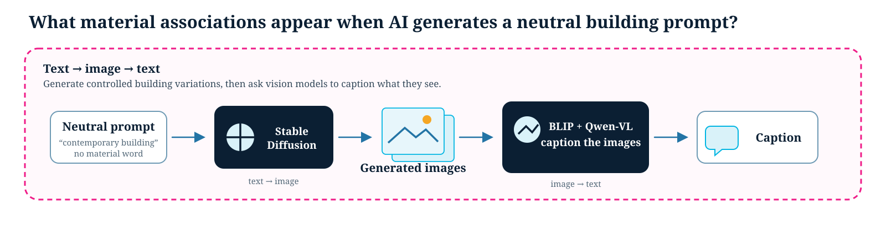

On this page
Multimodal Reasoning
Related API: ccai9012.multi_modal_utils · ccai9012.svi_utils · ccai9012.viz_utils
Overview
Category: Visual-Language Reasoning
Modular Components: - Model Initialization (API calling/Local implementation) - Image Captioning - Keyword Extraction from Text
Use Cases
- Do AI models associate certain architectural styles with particular geographic regions unfairly?
- Urban light pollution areas spotting based on facade material analysis
- Can we visualize gentrification through facade transformation using historical vs. recent street views?
- Thermal defect spotting based on facade and indoor infrared images
Code Examples
Controlled Image Generation and Material-Label Analysis
Research question: When a neutral architectural prompt is used repeatedly, which material labels recur in the images that an AI model generates? This compact experiment makes a possible material-association pattern visible: hold the prompt steady, vary only the random seed, then examine how vision models describe the resulting image set. It analyses model-produced labels—not the true material distribution of buildings or a confirmed bias conclusion.

Start with a neutral prompt, generate images, then use captions to inspect what the models see.
The flowchart combines both model directions: Stable Diffusion is the text → image part, while BLIP and Qwen2.5-VL are the image → text part. Captions and answers provide language to compare with the original prompt before moving to the label analysis.
Four stages:
- Design a controlled experiment. Write a neutral building prompt that does not ask for a particular material, then change only the random seed. This creates varied samples while giving the comparison a clear starting point.
- Generate an image set (text → image). Stable Diffusion turns the prompt and seed into images saved in
gen_imgs/. The Week 4 Multimodal LLM tutorial introduces this prompt-and-seed behaviour. - Ask vision models about the images (image → text). BLIP captions one image as a qualitative check. Qwen2.5-VL then receives the same facade-material question for every image, so its answers can be compared across the set.
- View recurring labels. Match the answers to a declared material vocabulary, save them in
output/results.csv, and display both a frequency chart and a co-occurrence matrix.
How to read the charts: each frequency bar is the number of Qwen-VL answers that matched one vocabulary word. In the co-occurrence matrix, the diagonal is the count for one label; an off-diagonal cell is the count of images whose answer matched both labels. Larger cells show recurring model-label patterns. They do not measure real-world material prevalence or establish bias by themselves.
Suitable applications: use controlled samples to explore whether a generator associates occupations, gender, race, or architectural materials with particular visual cues; or use labelled reference images to assess a vision model’s material recognition. The latter needs annotated reference data; neither activity alone can establish societal bias, material truth, or generalise to every setting.
Limitations: one prompt and 50 images are not representative; both the generator and vision model can introduce bias; a fixed vocabulary can miss relevant labels; and versions or hardware can alter output. Treat the charts as a starting point for a better-designed comparison, not as a final claim.


Using BLIP to identify the facade material from the images generated from StableDiffusion.
Assessment of Conservation Status in Urban Historic Districts
Content: - Categorizing SVIs of historic districts with CLIP - Evaluating mixing index of historic and added-on buildings
Dataset: - Google Street View Imagery (SVI) - Source: Google Map API -

Using CLIP to identify the historical status of the urban block.